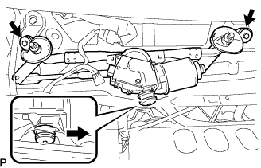

ウインドシールド ワイパ モータASSY 取り外し |
| 1. ウインドシールド ワイパ アーム カバー取りはずし |
| 2. フロントワイパアームRH取りはずし |
ナットをはずし、フロントワイパアームRHを取りはずす。
| 3. フロントワイパアームLH取りはずし |
ナットをはずし、フロントワイパアームLHを取りはずす。
| 4. フード トゥー カウルトップ シール取りはずし |
 |
クリップのかん合6箇所をはずし、ボンネツト(フード)ツウカウルトップシールを取りはずす。
| 5. カウルトップベンチレータ ルーバ RH取りはずし |
 |
クリップ2個およびツメのかん合7箇所をはずし、カウルトップベンチレータルーバRHを取りはずす。
| 6. カウルトップベンチレータ ルーバ LH取りはずし |
 |
クリップ1個およびツメのかん合8箇所をはずし、カウルトップベンチレータルーバLHを取りはずす。
| 7. ウインドシールド ワイパ リンクASSY取りはずし |
ウインドシールドワイパモータのコネクタを切り離す。
|  |
ボルト２本をはずす。
ウインドシールドワイパリンクASSYをウインドシールドワイパモータASSY付きで右側にずらして、ゴム製のピンのかん合をはずして取りはずす。
| 8. ウインドシールド ワイパ モータASSY取りはずし |
保護テープを巻いたマイナスドライバーを使用して、ウインドシールドワイパモータASSYのクランクアームピボット部から、ウインドシールドワイパリンクアームを切り離す。
保護テープを巻いたマイナスドライバーを使用して、ウインドシールドワイパモータASSYのクランクアームピボット部から、ウインドシールドワイパリンクアームを切り離す。
 |
トルクスソケットレンチ(T30)を使用してボルト２本をはずし、ウインドシールドワイパモータASSYをウインドシールドワイパリンクASSYから取りはずす。